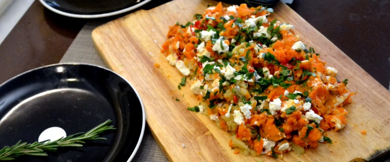

Батат с сыром фета

Почистить 3 картофелины и 2 крупных батата. Разрезать на примерно одинаковые не мелкие части. Поставить вариться до готовности с половинкой лимона, посолив. Поставить разогреваться духовку до 200 градусов. В жаропрочную миску выложить сваренный картофель, слегка раздавить, полить оставшейся половинкой лимона, добавить порезанную кинзу, раскрошить сверху 50-100 гр. сыра фета. и полить 2 ст.л. оливкового масла. Небрежно все перемешать и отправить в духовку на 5 минут.